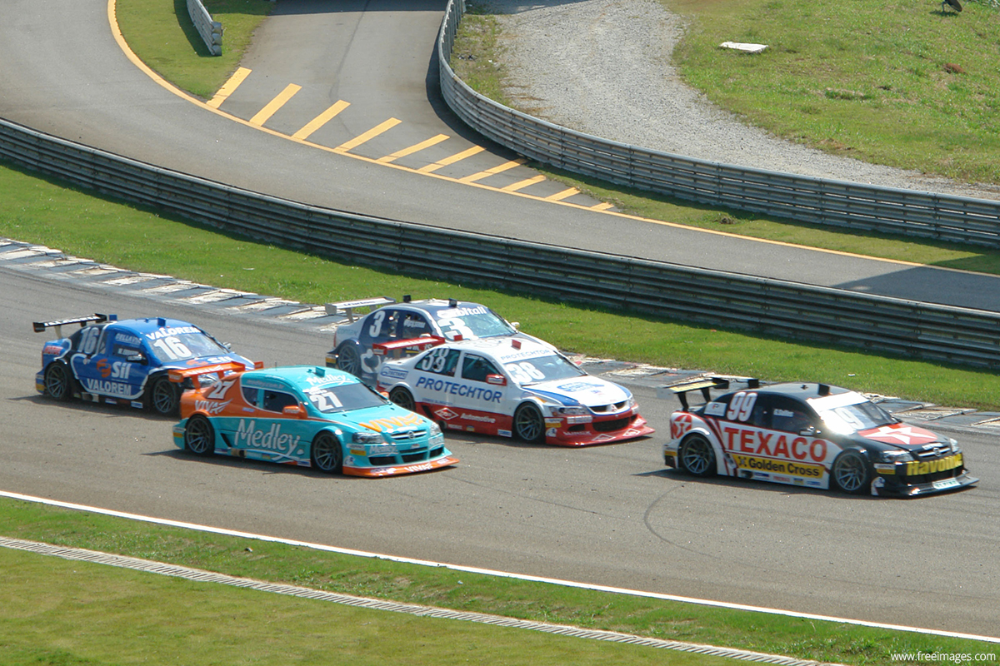

- "Monaco Grand Prix"
- The Monaco Grand Prix is a Formula One motor racing event held annually on the Circuit de Monaco, in late May or early June.
- The race is held on a narrow course laid out in the streets of Monaco, with many elevation changes and tight corners as well as the tunnel, making it one of the most demanding circuits in Formula One.
Go back